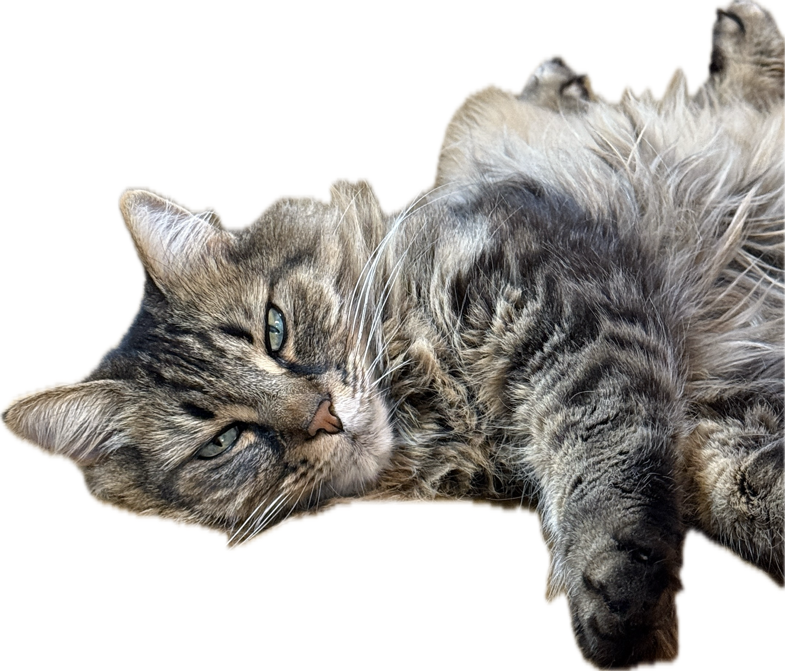
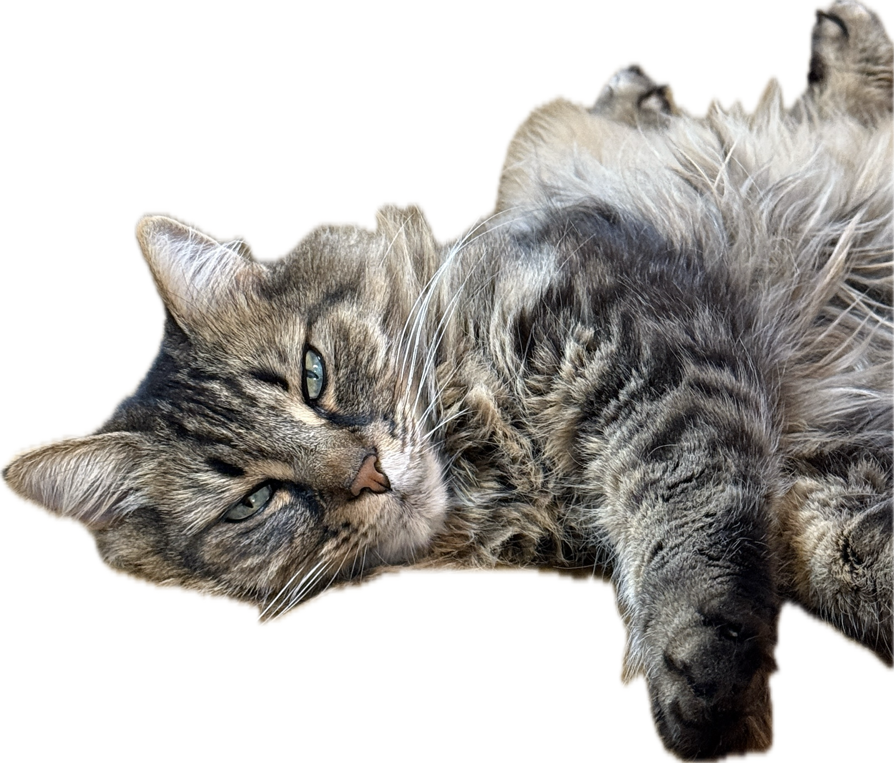

Thank you for being you
I love you
Between Two Worlds
Where ocean meets the waiting sky
Salt-winds carry seabirds high
And in that space between the two
Our souls collide to free the blue
Like water drawn through ancient stone
We have never been alone
Each grain of sand, each drop of rain
Carry stories the timelines retain
Between the core of earth and heaven's height
The shadows dance in fading light
And fly away as a gentle dove
Making way for joyful love
 
